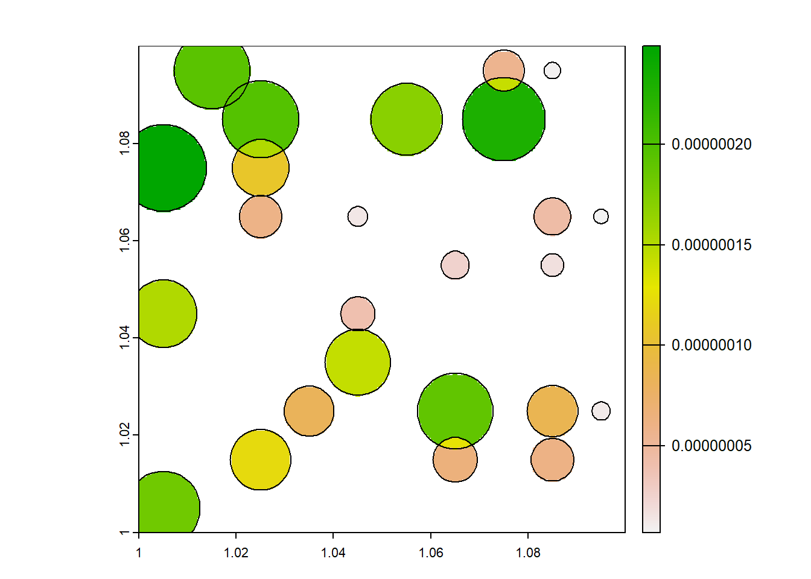
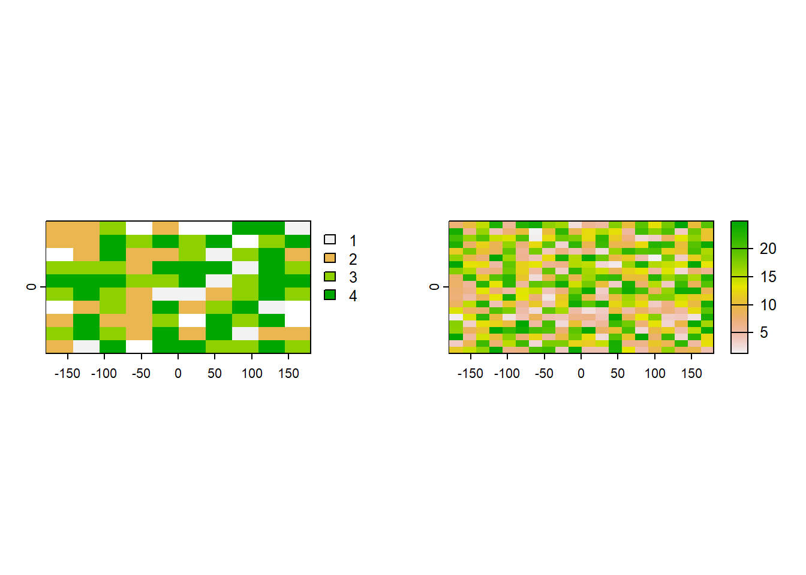
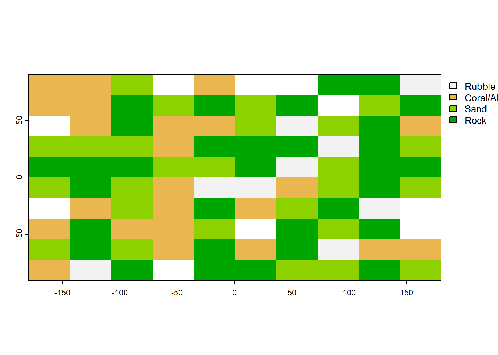

library(terra)terra 1.7.18r <- rast(ncols=10, nrows=10, xmin = 1, xmax = 1.1, ymin = 1, ymax = 1.1)
values(r) <- sample(1:ncell(r), ncell(r))We did something different for May: a problem solving session!

Here, people emailed in some questions which we went through and discussed in the workshop.
It seemed to go pretty well, so we will probably use this format from time to time.
Below, we have the two main questions that were discussed, attempted solutions
I have a geospatial problem to crop field mapping.I am using household survey data that includes a section on crop fields, their location, their area, use, distance to homestead and other things. An example for one country, Ethiopia, is here.
For privacy reasons I cannot get the GPS coordinates of each crop field although this data was collected. The household GPS locations are easier to access.
I try to think through a process of calculating field size per raster grid cell that intersects with a circle around a household that is defined by the maximum field-homestead distance. I know that all the fields have to be within that circle and I know the mean field size and the distribution of field sizes within that circle. I was thinking to just assume that every grid cell in the circle has the mean field size of that circle with an error range based on the field size distribution. But there are also overlaps between circles and I don’t just want to calculate averages in this case.
Do you know of a similar geospatial problem that someone has solved already that I could look into to get some ideas? From another field outside agriculture even?

In this problem, we have point data (the households), with attributes related to the crop fields that are associated with that household, such as their area, use and distance to homestead. One of those attributes, maximum distance of field to homestead, was used to generate the buffers (red circles). But because maximum distance doesn’t perfectly capture the distance of fields to homesteads, they overlap. This complicates the process of rasterising the buffers.
To explore our options, we will use the Terra R package.
First, we will create some dummy data.
library(terra)terra 1.7.18r <- rast(ncols=10, nrows=10, xmin = 1, xmax = 1.1, ymin = 1, ymax = 1.1)
values(r) <- sample(1:ncell(r), ncell(r))Then create some random points within our dummy raster (r). These represent the household locations.
samp <- spatSample(r, 25, as.points=TRUE, method = "random")
widths <- sample(100:1000, length(samp), replace = T)Finally, we will add buffers to each of the points, randomly sized to represent the variability in maximum distance to field from household.
buf<-list()
for(i in 1:length(samp)) {buf[[i]] <- buffer(samp[i], widths[i])}
fields <- vect(buf)Also, add in other attributes (dmax, dmin and dmed) representing other field attributes like mean field size etc.
fields$ID <- 1:25 #field IDs
fields$dmax <- expanse(fields) / 1000 #based on area covered by vector. Warning: [expanse] unknown CRS. Results can be wrongfields$dmin <- fields$dmax / 4
fields$dmed <- fields$dmax / 2 So now when we plot everything, we have essentially recreated the problem.
plot(r) #plot the dummy raster
plot(fields, add = T)
And when we look at the attributes of the fields dataset, we have attributes for each field.
fields class : SpatVector
geometry : polygons
dimensions : 25, 5 (geometries, attributes)
extent : 0.9961141, 1.096878, 0.9973581, 1.102877 (xmin, xmax, ymin, ymax)
coord. ref. :
names : lyr.1 ID dmax dmin dmed
type : <int> <int> <num> <num> <num>
values : 5 1 1.071e-07 2.677e-08 5.354e-08
100 2 6.054e-08 1.514e-08 3.027e-08
23 3 1.221e-07 3.052e-08 6.104e-08This ensures that polygons are not overlapping - 1 point per grid cell. but it removes the spatial representation of the radius.
centres <- terra::centroids(fields)
plot(r)
plot(centres, add=TRUE)
Now that we have converted the buffers to points, we can use the rasterize function to add the point data to the rasters - one layer per attribute.
dmax_cent <- rasterize(centres, r, "dmax", "mean") #rasterize the dmax attribute of the points
names(dmax_cent) <- "dmax_cent" #name the dmax layer
dmin_cent <- rasterize(centres, r, "dmed", "mean") # rasterize the median field size attribute from the points
names(dmin_cent) <- "dmin_cent" #name the dmin layer
dmed_cent <- rasterize(centres, r, "dmin", "mean") #rasterize the min field size from the point layers
names(dmed_cent) <- "dmed_cent" #name the dmed layer
cent_combined <- c(dmax_cent, dmin_cent, dmed_cent) #combine the rasters into a single spatVectorpar(mfrow=c(1,3))
plot(dmin_cent, xlim = c(1, 1.1))
plot(centres, add=T)
plot(dmax_cent)
plot(centres, add=T)
plot(dmax_cent)
plot(centres, add=T)
We can see that each household, represented by the points, relates to a single raster grid cell. This might be enough, but the spatial information embedded in the buffers - where the buffer size is proportional to maximum distance - is lost.
So what options are there to preserve this information when rasterizing?
There has been a similar issue posted on stackoverflow which gives us some clues.
Ok, going back to our fields and our raster:
plot(r)
plot(fields, add=T)
One idea was to scale the field size by the fraction of the grid cell that it covers, such that a 100m max field size, that covered 5% of a grid would become 5m. Unfortunately this doesn’t make a lot of sense, as the actual size of the field hasnt changed.
So really what we want to do is just add the field size onto the raster. so even if its a small fraction, the average size would still be 100m.
But its not so simple when field buffers overlap: what happens when a 100m field and 50m field overlap within the same grid cell?
One approach is to reduce the cell size of the original raster, then individually rasterize all of the field polygons using this fine resolution raster, before merging the musing the mosaic function to make the grid cells much smaller than they currently are.
dis <- terra::disagg(r, 20) # 20x smaller cells.
dvalue <- lapply(1:nrow(fields), \(i) rasterize(fields[i,], dis, field = "dmax")) #rasterize each of the fields using the fine raster
dvalue <- terra::sprc(dvalue) #make a spatraster collection out of the list of rasterised fields
dvalue <- mosaic(dvalue) #mosaic them all together, which by default will average overlapping cells
plot(dvalue)
plot(fields, add=TRUE)
Now, the original question was what is the average field size per grid cell. When we re-aggregate the data
par(mfrow=c(1,2))
plot(dmax_cent)
plot(fields, add=T)
plot(aggregate(dvalue, 20, mean, na.rm = TRUE))
plot(fields, add=T)
So now, each cell should represent the average field size within it. This is not perfect: It might tell you where there are trends toward bigger or smaller fields, but the raster cell is not proportional to field size so be careful with summary statistics.
Have 2 rasters, one categorical representing classes of coral reef cover, and one continuous representing wave action.
Wanting to take a random sample of the reef cover raster (excluding NAs), then use that sample to return corresponding values of the continuous raster. The two rasters have different resolutions.
As always, we will start by trying to create a dummy dataset. Starting with the reef cover raster.
library(terra) #load the terra library, the best for raster analysis in R
#make a coral cover raster
coral <- rast(ncol=10, nrow=10, names="stratum") # a 10x10 raster
set.seed(1)
values(coral) <- round(runif(ncell(coral), 1, 5)) #values 1-5, setting 5 as NA
coral <- terra::classify(coral, cbind(5, NA)) # #make 5 NA, so the dataset has some NA
#make a wave action raster
wave <- rast(ncol=20, nrow=20)
set.seed(1)
values(wave) <- runif(ncell(wave), 1, 25)
wave <- terra::classify(wave, cbind(5, NA))
par(mfrow=c(1,2)) #plot them side-by-side
plot(coral)
plot(wave)
Now we can take a random sample of the coral cover raster using the spatSample function.
rand_pts <- spatSample(coral, 10, "random", as.points=TRUE, na.rm = TRUE) #this will sample the number from among the strata (not #NA)
plot(coral)
plot(rand_pts, 1, add=TRUE, plg=list(x=185, y=1, title="points"))
And we can see that each point relates to the stratum integer of the raster:
rand_pts$stratum [1] 3 3 3 4 1 4 4 3 3 4As an aside, this doesn’t seem to work when we have a named categorical raster, as opposed to a categorical raster represented by integers. As we will see if we label the categories using the levels function:
coral_named = coral-1 #values need to start at zero, not one, for the levels function.
#the way we made the raster, they started at one.
levels(coral_named) <- c("Rubble", "Coral/Algae", "Sand", "Rock") #now we Can add our category labels in Warning: [set.cats] setting categories like this is deprecated; use a two-column
data.frame insteadplot(coral_named)
We would obviously prefer our categorical raster to look like this, with names rather then integers representing the categories. But when we randomly sample it with spatSample (using the exact same code as above), we get a whole pile of NAs.
rand_pts_named <- spatSample(coral_named, 10, "random", as.points=TRUE, na.rm = TRUE) #this will sample the number from among the strata (not NA)
rand_pts_named$stratum [1] Coral/Algae Rock Rock Sand Rock Coral/Algae
[7] Rock Sand Sand Rubble
Levels: Rubble Coral/Algae Sand RockNot sure why this is the case and it might be a good one to put on stack overflow… but for now, lets just move on knowing the integers represent the cover classes.
So getting back to the task - we can use the random sample from the coral layer stored in the rand_pts spatVector using rasterize:
coral_sample <- rasterize(rand_pts, wave, field = "stratum") #rasterize the points using the wave raster as a templateAnd now that we are done sampling, we can name our coral categories.
coral_sample <- coral_sample -1
levels(coral_sample) <- c("Rubble", "Coral/Algae", "Sand", "Rock") #now we can add our category labels inWarning: [set.cats] setting categories like this is deprecated; use a two-column
data.frame insteadFinally, we can use the mask function to grab the cells where we have sample values of coral:
waves_sample <- mask(wave, coral_sample) #get the waves cells where the points were Lets have a look at the two rasters to see if they it all makes sense.
par(mfrow=c(1,2)) #plot them side-by-side
plot(coral_sample)
plot(waves_sample)